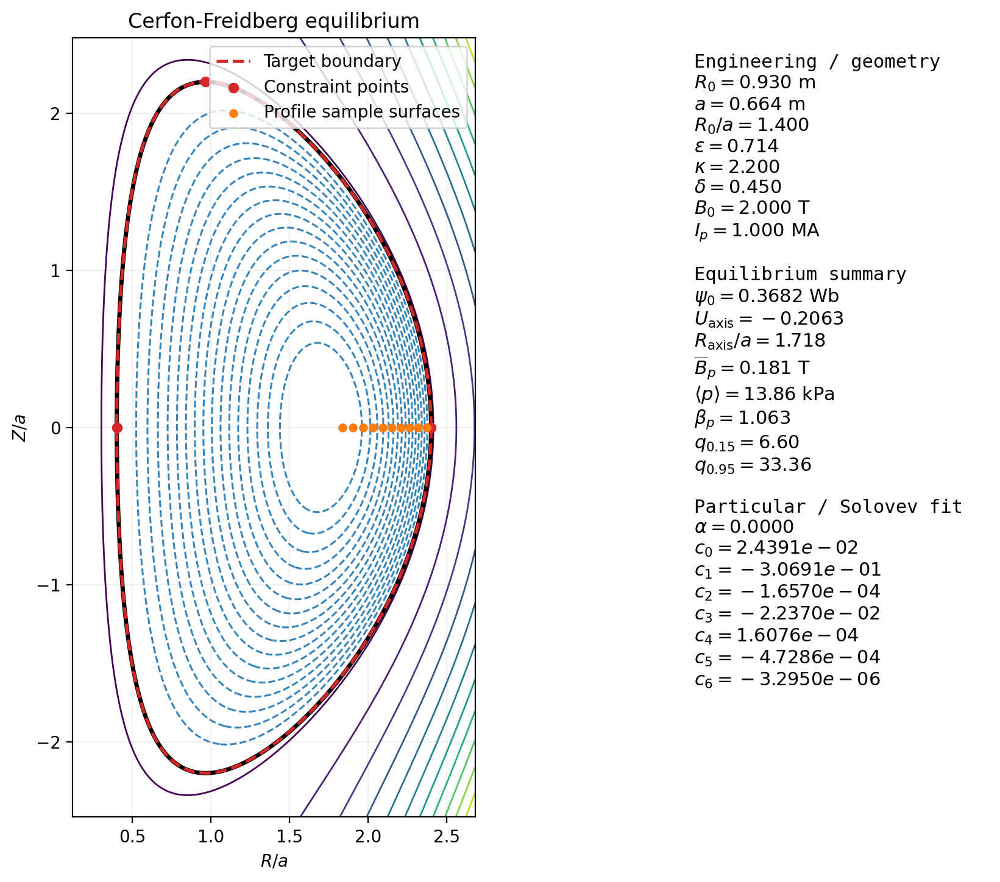

Axisymmetry turns vector force balance into one scalar elliptic equation.
- 1.
- In the isotropic limit of the previous lecture, pressure becomes a flux function: \(p=p(\psi )\).
- 2.
- Axisymmetry allows the magnetic field to be written in terms of one poloidal flux function \(\psi (R,Z)\) and one toroidal-field function \(F(\psi )\).
- 3.
- The Grad–Shafranov equation then determines the shape of flux surfaces once the boundary and the free functions \(p(\psi )\) and \(F(\psi )\) are specified.
The previous lecture kept the pressure tensor general and asked what static balance looks like in a gyrotropic plasma. This lecture now makes two deliberate simplifications. First, we return to scalar pressure, so that Eq. (11.11) collapses to Eq. (11.19). Second, we impose axisymmetry. Those two choices are enough to reduce the vector equation \(\J \times \B =\grad p\) to a single second-order partial differential equation for the poloidal flux function.
The Grad–Shafranov equation was one of the decisive conceptual advances of magnetic-confinement theory. Shafranov formulated the toroidal equilibrium problem in a way that made the role of current, pressure, and geometry transparent, while Grad emphasized the central importance of flux coordinates and the mathematical structure of the axisymmetric confinement problem Shafranov [1958, 1960, 1966], Grad [1967]. Nearly every modern tokamak equilibrium code still lives inside this framework, even when dressed up with sophisticated numerics and diagnostic constraints.
This lecture is intentionally isotropic. The fully anisotropic equilibrium problem from the previous lecture does not reduce to the same one-function equation. Once the pressure depends separately on \(p_\perp \) and \(p_\parallel \), the structure of the equilibrium changes. Here we are solving the classical isotropic axisymmetric problem.
Represent the field so that divergence-free structure is automatic. In cylindrical coordinates \((R,\phi ,Z)\), axisymmetry means \[ \pp {}{\phi }=0. \] A convenient representation of the magnetic field is
Why psi deserves to be called a flux function. Contours of constant \(\psi \) in the \((R,Z)\) plane are magnetic surfaces. Indeed,
Compute the current density from Ampère’s law. Using Eq. (1.11),
Start from isotropic static force balance. For scalar pressure, Eq. (1.8) reduces in static equilibrium to
First show that pressure is a flux function. Dot Eq. (12.10) with \(\B \):
Next show that the toroidal-field function is also a flux function. The right-hand side of Eq. (12.10) has no toroidal component, so the toroidal component of \(\J \times \B \) must vanish:
Now write the current in flux-surface form. Equation (12.9) becomes
Compute the poloidal-current/toroidal-field term. Using Eqs. (12.19) and (12.20),
Compute the toroidal-current/poloidal-field term. Again from Eqs. (12.19) and (12.20),
Add the two pieces and compare with the pressure gradient. Since \(\J \times \B =\J _p\times \B _\phi + \J _\phi \times \B _p\), Eqs. (12.22) and (12.24) give
Read off the toroidal current density. Combining Eq. (12.28) with Eq. (12.7) gives
Why the problem is elliptic. The operator \(\Delta ^\star \) from Eq. (12.6) has the same second-derivative structure as a two-dimensional Laplacian, modified by the cylindrical geometry. Away from \(R=0\) it is elliptic, which is why the entire plasma column responds globally when one changes the source or the boundary.
Fixed-boundary equilibria. In the simplest case one prescribes the plasma domain \(\Omega \) and imposes
Free-boundary equilibria. In experiments the plasma boundary is often not known in advance. Instead one writes
The free functions are physical input. Equation (12.28) does not determine \(p(\psi )\) or \(F(\psi )\); they must be supplied from modeling assumptions, transport calculations, or experimental constraints. A common parameterization is
Choose constant source terms. A particularly useful analytic family follows from the simple choice
Find a particular solution by trial. Try
Add homogeneous solutions to shape the boundary. The homogeneous equation \(\Delta ^\star \psi _h=0\) admits a polynomial family such as
Special case: only externally imposed toroidal field. If \(F'(\psi )=0\), then \(C_F=0\) and the toroidal-field function is constant and equal to the applied field. Equation (12.28) reduces to

Interactive Cerfon Solver
Open a slider-driven browser explorer for the shaped Solov’ev fit. The app adjusts \(R_0/a\), \(\kappa\), \(\delta\), and the source-mix parameter \(\alpha\), then overlays the target boundary against the fitted \(U=0\) surface and interior flux contours.
Interactive PF-Coil Flux Explorer
Open a browser companion for the external coil set. ITER, SPARC, and DIII-D presets provide simplified central-solenoid, PF-shaping, divertor, vertical-field, and plasma-current contributions, and a checkmark table lets you decide which pieces build the total equilibrium and which single family is being contoured.
Most General Solution One can extend the Solov’ev technique to include a broader collection of homogeneous solutions that make creating equilibria with different shapes quite general. Best to first non-dimensionalize and construct a particular solution. Write
Why Solov’ev equilibria are still useful. They are analytically tractable, they expose how shaping enters the flux geometry, and they provide benchmark solutions for numerical codes. That is why they remain a classic problem in their own right and continue to appear in analytical work and code verification.
Allow purely toroidal flow,
The steady momentum equation becomes
Ferraro’s isorotation theorem Ideal Ohm’s law, \[ \E + \uvec \times \B = 0, \] and \(\pp {\vect {B}}{t}\) implies \[ \curl (\uvec \times \B )=0. \]
For purely rotating plasmas \(\uvec = R^2 \Omega \grad \phi \), and
Parallel force balance Projecting (12.51) along \(\B \) gives
Assuming \(T=T(\psi )\) and \(p=nT\), this integrates to
Modified Grad–Shafranov equation Because \(p=p(\psi ,R)\),
Rotation modifies equilibrium implicitly through the \(R\)-dependent pressure profile, while Ferraro’s theorem ensures rigid rotation on each flux surface.
- In isotropic axisymmetric equilibrium, both \(p\) and \(F\) become functions of the flux \(\psi \).
- The Grad–Shafranov equation, Eq. (12.28), is the single PDE that enforces force balance on flux surfaces.
- Solving the equation requires three choices: a domain, boundary conditions, and the free functions \(p(\psi )\) and \(F(\psi )\).
- Analytic families such as Solovév equilibria are useful because they show how shaping enters before one commits to full numerical reconstruction.
Julius Hartmann and Freimut Lazarus. Hg-dynamics II: Experimental investigations on the flow of mercury in a homogeneous magnetic gield". Matematisk-fysiske Meddelelser, 15(7):1–45, 1937.
Hannes Alfvén. Cosmical Electrodynamics. Clarendon Press, Oxford, 1950.
Walter M. Elsasser. Hydromagnetic dynamo theory. Reviews of Modern Physics, 28(2):135–163, 1956. doi:10.1103/RevModPhys.28.135.
T. G. Cowling. Magnetohydrodynamics. Interscience Publishers, New York, 1957.
S. Chandrasekhar. Hydrodynamic and Hydromagnetic Stability. Clarendon Press, Oxford, 1961.
P. H. Roberts. An Introduction to Magnetohydrodynamics. Longmans, London, UK, 1967. ISBN 9780582447288.
Raymond Hide and Paul H. Roberts. Some elementary problems in magneto-hydrodynamics. Advances in Applied Mechanics, 7:215–316, 1962. doi:10.1016/s0065-2156(08)70123-6.
H. K. Moffatt. Magnetic Field Generation in Electrically Conducting Fluids. Cambridge University Press, Cambridge, England; New York, NY, USA, 1978. ISBN 9780521216401. Cambridge Monographs on Mechanics and Applied Mathematics.
Russell M. Kulsrud. Plasma Physics for Astrophysics. Princeton University Press, Princeton, NJ, 2005. ISBN 9780691120737.
Jeffrey P. Freidberg. Ideal Magnetohydrodynamics. Plenum Press, New York, NY, USA, 1987. ISBN 9780306425127.
Dalton D. Schnack. Lectures in Magnetohydrodynamics: With an Appendix on Extended MHD, volume 780 of Lecture Notes in Physics. Springer, Berlin, Heidelberg, 2009. ISBN 9783642006876. doi:10.1007/978-3-642-00688-3.
Problem 12.1. Derive the Grad–Shafranov equation from scratch
Part A. Starting from Eq. (12.1), derive Eq. (12.2).
Part B. Use Eq. (1.11) to derive Eqs. (12.7) and (12.8). Do not skip the algebra that produces the operator \(\Delta ^\star \).
Part C. Starting from Eq. (12.10), show that \(p=p(\psi )\) and \(F=F(\psi )\).
Part D. Reproduce Eqs. (12.22) and (12.24), and hence derive Eq. (12.28).
Problem 12.2. Solovév equilibria and Green’s functions
Part A. Verify Eq. (12.37) directly by acting with \(\Delta ^\star \) on \(R^4\), \(Z^2\), and \(R^4-4R^2Z^2\).
Part B. Starting from Eq. (12.35), derive the particular solution Eq. (12.40) and then verify the full family Eq. (12.42).
Part C. For a toroidal current filament located at \((R_{\rm coil},Z_{\rm coil})\), derive the Green’s-function expression leading to Eq. (14.48). Show where the complete elliptic integrals enter.
Part D. Implement a simple code to plot contours of \(\psi \) for a dipole, quadrupole, and octupole arrangement of external coils, following the configurations described in the figure-caption discussion.